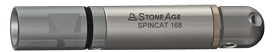
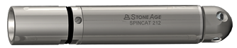
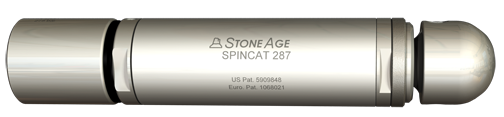

<main class="spincat landing">
  <div class="row bg-lt-grey margin-bottom-30 header">
    <div class="col-sm-12 heading-img">
      
    </div>
    <div class="col-sm-12 heading">
      <h1>SpinCat</h1>
      <h3>Downhole Tools</h3>
    </div>
  </div>

  <section class="row padding-tb-30">
    <div class="container">
      <p class="width-90 description margin-bottom-30"><span class="bold">The SpinCat family of tools provide a durable, controlled rotation solution for well intervention operations.</span> A viscous fluid governor controls rotation speed to maximize jet power delivered to the tubing walls. By using only a few rotating jets, each jet is bigger to convey hard-hitting power. Replaceable jets are efficient and clean recesses and irregular surfaces without damaging the well pipe. Over thirty years of waterjet engineering back the SpinCat design, setting the standard for rotary nozzle performance and durability.</p>
      <!-- Tool List -->
      <div class="row">
        <div class="col-sm-3 product-list">
          <div class="list-group">
            <a href="/sc-168" class="list-group-item header">SpinCat SC-168</a>
            <a href="/sc-168" class="list-group-item">
              <p>Flow range: 0.7 – 1.3 bpm</p>
            </a>
          </div>
        </div>
          
        <div class="col-sm-3 product-list">
          <div class="list-group sc-212">
            <a href="/sc-212" class="list-group-item header">SpinCat SC-212</a>
            <a href="/sc-212" class="list-group-item">
              <p>Flow range: 0.8 – 2 bpm</p>
            </a>
          </div>
        </div>
        
        <div class="col-sm-3 product-list">
          <div class="list-group">
            <a href="/sc-250" class="list-group-item header">SpinCat SC-250</a>
            <a href="/sc-250" class="list-group-item">
              <p>Flow range: 0.7 – 3.0 bpm</p>
            </a>
          </div>
        </div>
        
        <div class="col-sm-3 product-list">
          <div class="list-group">
            <a href="/sc-287" class="list-group-item header">SpinCat SC-287</a>
            <a href="/sc-287" class="list-group-item">
              <p>Flow range: 1.0 – 3.0 bpm</p>
            </a>
          </div>
        </div>
        
      </div><!-- end row -->
    </div><!-- end container -->
  </section> 

  <section class="fluid-container margin-top-30 margin-bottom-30 bg-lt-grey">
    <div class="container">
      <div class="row">
        <div class="col-sm-4 padding-30 grey">
          <h2>How it works</h2>
          <p>The SpinCat is an extremely durable self-rotating nozzle for well service applications. The powerful rotating jet design is engineered to maximize the limited hydraulic horsepower available to the BHA at the end of a long CT or workstring. Jet reaction force powers rotation of the head and an internal centrifugal speed control mechanism maintains rotation speeds.</p>
        </div>
        <div class="col-sm-4 padding-30 grey">
          <h2>Jetting</h2>
          <p>The standard nozzle head has five ports with 1/8 NPT threads &mdash; one at 15 degrees forward, two at 45 degrees forward, and two at 90 degrees to the axis of rotation. Some of the ports may be plugged in a balanced pattern to concentrate the flow in a particular direction. Fit-for-purpose head and porting designs are available to accommodate specific flow rates and applications.</p>
        </div>
        <div class="col-sm-4 padding-30 grey">
          <h2>Features</h2>
          <p>SpinCat tools have a straight flow-through design with a leak-free high pressure seal, so pump power is not wasted. The tools can be used at temperatures up to 200°C, with up to 30% HCL and Nitrogen injection.</p>
        </div>
      </div>
    </div>
  </section>

  <section class="fluid-container margin-bottom-30">
    <div class="container">
      <div class="row padding-tb-30">
        <h2>Hard-Hitting Cleaning Power</h2>
        <p class="thin">Cut through parafin, asphaltine, hydrates, calcium carbonate, barium sulphate or mineral scale with ease.</p>

          <iframe src="https://www.youtube.com/embed/4RU21ZBTzP8" frameborder="0" allowfullscreen></iframe>
      </div>
    </div>
  </section>

</main>

{% include footer-cta.html %}